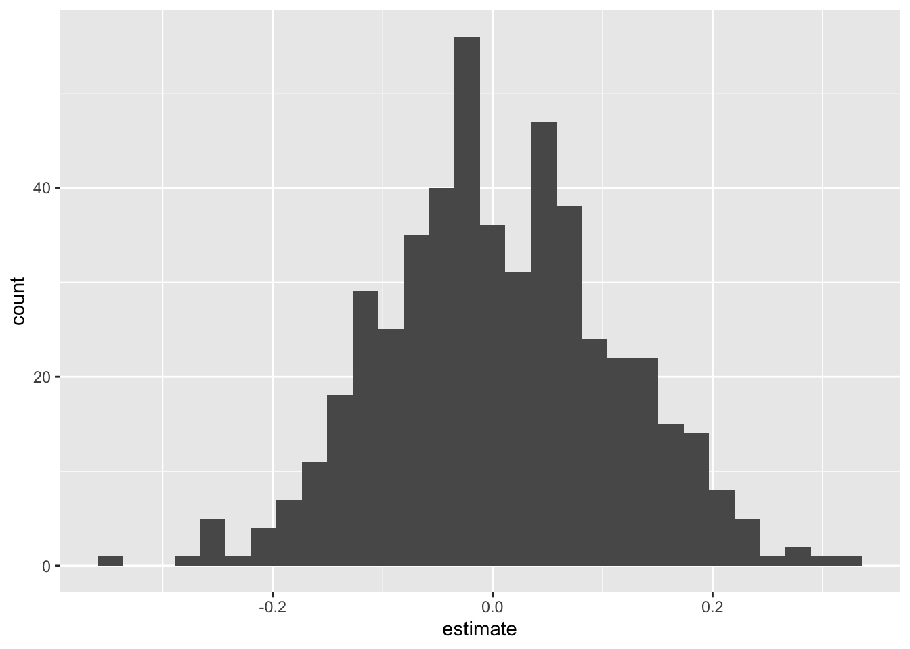

AE 17: stonks
Today we’ll explore the question “How do stock prices of Apple and Microsoft relate to each other?”
Packages
Data
The data for this application exercise was originally gathered using the tidyquant R package. It features Apple and Microsoft stock prices from January 1st 2020 to December 31st 2021.
First, let’s load the data:
stocks <- read_csv("data/stocks.csv")To keep things simple, we’ll work with a subset of the data, stock prices in January 2020.
Rows: 21
Columns: 13
$ date <date> 2020-01-02, 2020-01-03, 2020-01-06, 2020-01-07, 2020-01…
$ MSFT.Open <dbl> 158.78, 158.32, 157.08, 159.32, 158.93, 161.84, 162.82, …
$ MSFT.High <dbl> 160.73, 159.95, 159.10, 159.67, 160.80, 162.22, 163.22, …
$ MSFT.Low <dbl> 158.33, 158.06, 156.51, 157.32, 157.95, 161.03, 161.18, …
$ MSFT.Close <dbl> 160.62, 158.62, 159.03, 157.58, 160.09, 162.09, 161.34, …
$ MSFT.Volume <dbl> 22622100, 21116200, 20813700, 21634100, 27746500, 213850…
$ MSFT.Adjusted <dbl> 156.9244, 154.9704, 155.3710, 153.9543, 156.4066, 158.36…
$ AAPL.Open <dbl> 74.0600, 74.2875, 73.4475, 74.9600, 74.2900, 76.8100, 77…
$ AAPL.High <dbl> 75.1500, 75.1450, 74.9900, 75.2250, 76.1100, 77.6075, 78…
$ AAPL.Low <dbl> 73.7975, 74.1250, 73.1875, 74.3700, 74.2900, 76.5500, 77…
$ AAPL.Close <dbl> 75.0875, 74.3575, 74.9500, 74.5975, 75.7975, 77.4075, 77…
$ AAPL.Volume <dbl> 135480400, 146322800, 118387200, 108872000, 132079200, 1…
$ AAPL.Adjusted <dbl> 73.78591, 73.06856, 73.65079, 73.30441, 74.48362, 76.065…These are daily data. For each stock, we have several variables, including:
-
Open: price at the start of the trading day; -
High: highest price during the trading day; -
Low: lowest price during the trading day; -
Close: price at the end of the trading day;
We will focus on using the Microsoft open to predict the Apple open.
Visualize
Your turn: Plot the data and the line of best fit.
ggplot(stocks_jan2020, aes(x = MSFT.Open, y = AAPL.Open)) +
geom_point() +
geom_smooth(method = "lm")Point Estimation
- Your turn: Fit the linear model to these data:
observed_fit <- stocks_jan2020 |>
specify(AAPL.Open ~ MSFT.Open) |>
fit()
observed_fit# A tibble: 2 × 2
term estimate
<chr> <dbl>
1 intercept 3.31
2 MSFT.Open 0.454- Your turn: Typeset the equation for the model fit:
\[ \widehat{AAPL} = 3.31 + 0.45\times MSFT \]
-
Your turn: Interpret the slope and the intercept estimates:
- If Microsoft opened at $0, we predict that Apple opens at $3.31 on average;
- A $1 increase in Microsoft predicts ia associated with a $0.45 increase in Apple, on average.
Interval Estimation
-
Demo: Using seed
8675309, generate500bootstrap samples, and store them in a new data frame calledbstrap_samples.
set.seed(8675309)
bstrap_samples <- stocks_jan2020 |>
specify(AAPL.Open ~ MSFT.Open) |>
generate(reps = 500, type = "bootstrap")-
Demo: Fit a linear model to each of these bootstrap samples and store the estimates in a new data framed called
bstrap_fits.
bstrap_fits <- bstrap_samples |>
fit()-
Your turn: Use
linear_reg() |> fit(...)to fit a linear model to bootstrap sample number 347, and verify that you get the same estimates as the ones contained inbstrap_fits.
replicate_347 <- bstrap_samples |>
filter(
replicate == 347
)
linear_reg() |>
fit(AAPL.Open ~ MSFT.Open, data = replicate_347) |>
tidy()# A tibble: 2 × 5
term estimate std.error statistic p.value
<chr> <dbl> <dbl> <dbl> <dbl>
1 (Intercept) 19.7 7.29 2.70 0.0141
2 MSFT.Open 0.354 0.0441 8.02 0.000000160bstrap_fits |>
filter(replicate == 347)# A tibble: 2 × 3
# Groups: replicate [1]
replicate term estimate
<int> <chr> <dbl>
1 347 intercept 19.7
2 347 MSFT.Open 0.354-
Demo: Compute 90% confidence intervals for the slope and the intercept using the
get_confidence_intervalcommand.
get_confidence_interval(
bstrap_fits,
point_estimate = observed_fit,
level = 0.90,
type = "percentile"
)# A tibble: 2 × 3
term lower_ci upper_ci
<chr> <dbl> <dbl>
1 MSFT.Open 0.350 0.631
2 intercept -25.2 20.7 -
Your turn: Verify that you get the same numbers when you manually calculate the quantiles of the slope estimates using
summarizeandquantile. Pay attention to the grouping.
Hypothesis Testing
Let’s consider the hypotheses:
\[ H_0:\beta_1=0\quad vs\quad H_A: \beta_1\neq 0. \] The null hypothesis corresponds to the claim that Microsoft and Apple stock prices are uncorrelated. Probably bogus.
- Simulate and plot the null distribution for the slope:
set.seed(20241118)
null_dist <- stocks_jan2020 |>
specify(AAPL.Open ~ MSFT.Open) |>
hypothesize(null = "independence") |>
generate(reps = 500, type = "permute") |>
fit()
null_dist |>
filter(term == "MSFT.Open") |>
ggplot(aes(x = estimate)) +
geom_histogram()
- Add a vertical line to your plot indicating the point estimate of the slope from your original data analysis:
visualize(null_dist) +
shade_p_value(obs_stat = observed_fit, direction = "two-sided")
- Compute the \(p\)-value for this test and interpret it:
null_dist |>
get_p_value(obs_stat = observed_fit, direction = "two-sided")# A tibble: 2 × 2
term p_value
<chr> <dbl>
1 MSFT.Open 0
2 intercept 0